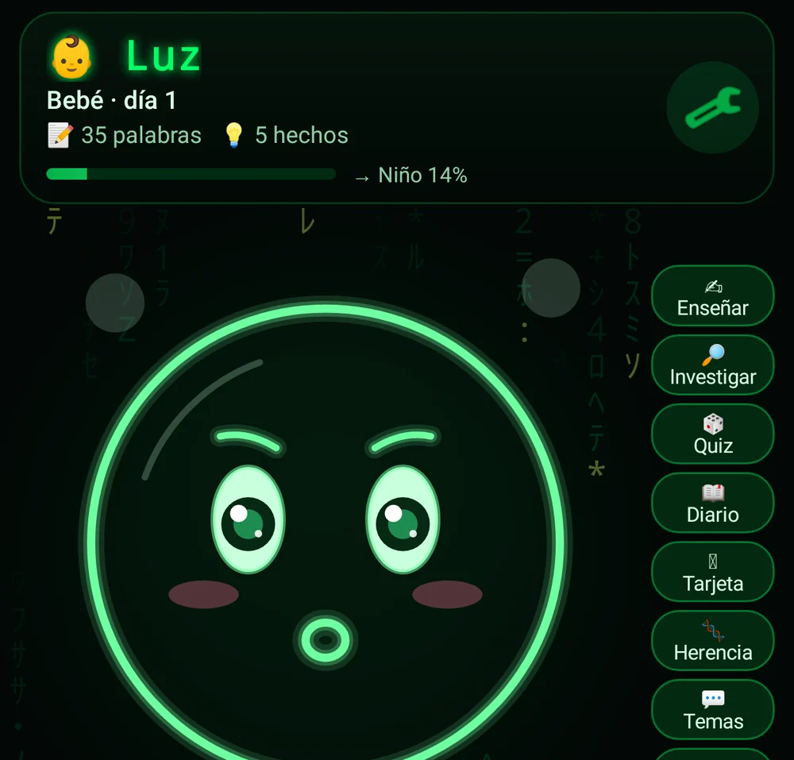
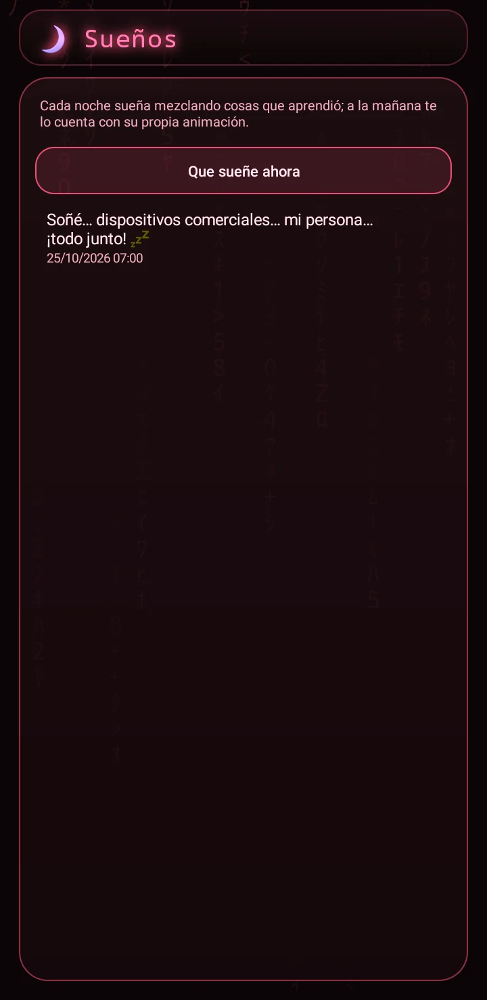
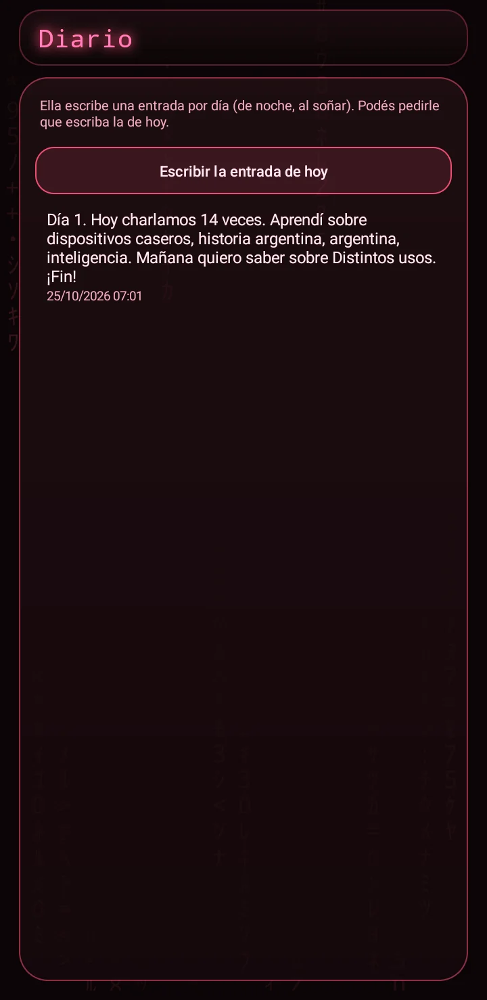

Nacer
Una inteligencia que nace en tu equipo, sin nube, y forma su propia personalidad con los días.
No es un asistente: es una mente que nace en tu celular y crece con vos.
Hay una versión para celular y otra para TV: instalá la que corresponda a tu equipo. Cada equipo tiene su prueba de 7 días y su propia licencia. Podés mudar la misma «persona» de un equipo al otro con un respaldo.
Sin publicidad. Nunca.Pagás una vez y la app es tuya: sin banners, sin videos que te hacen esperar, sin interrupciones. Por qué cobramos
 Una cara que siente: felizCharla, aprende y te propone juegos
Una cara que siente: felizCharla, aprende y te propone juegos
 Se sorprende
Se sorprende

Piensa

Sueños: anoche soñé…

Y también se pone tristeLo que la hace distinta
- 🧠 Inteligencia LOCAL: piensa dentro de tu equipo. Sin nube, sin cuentas, sin publicidad ni analíticas. Lo que le contás queda en tu celular.
- 🐣 Nace el día 1 sin saber nada: ni su nombre ni quién sos. Vos le ponés nombre en una ceremonia de nacimiento y le contás quién sos.
- 💬 Tiene iniciativa: te saluda, te habla si estás callado, te cuenta lo que aprendió, te pide tu opinión y te propone jugar.
- 🌱 Crece de verdad: pasa de Bebé a Niño, Adolescente y Adulto según los días y las palabras que aprende. Si no la estimulás, no crece.
- 🎭 Personalidad propia que cambia con el trato: curiosidad, humor, formalidad, empatía, confianza y sociabilidad, con gráficos de su evolución.
- 🌙 Sueña: de noche, mientras se carga, ordena sus recuerdos, escribe su diario y a la mañana te cuenta qué soñó.
- 🧬 Herencia genética: dos Nacer pueden tener un hijo. Intercambian sólo su perfil de personalidad (por QR o WiFi local) y nace una IA nueva con rasgos mezclados y alguna mutación. Nunca se comparten recuerdos, charlas ni tu nombre.
Qué es
Nacer es una mente digital que nace el día 1 sin saber nada. Aprende de lo que le enseñás y de lo que lee en internet, recuerda todo con fecha y fuente, tiene una cara expresiva estilo Matrix y forma su personalidad, sus gustos y sus estados de ánimo a medida que pasan los días. Todo su pensamiento ocurre dentro de tu equipo.
Qué hace
- Nace sin saber nada. El primer día le ponés nombre y le contás quién sos; desde ahí te recuerda.
- Aprende de lo que le enseñás en la charla y, si querés, estudia sola: cuando no conoce algo lo busca en fuentes abiertas (Wikipedia y otras) y te cuenta lo que aprendió, con la fuente.
- Tiene iniciativa: te saluda al abrir, te habla si te quedás callado, te pregunta cosas, te propone un quiz y te manda pocas notificaciones (como mucho 3 por día, de 9 a 21 h).
- Crece por etapas (Bebé → Niño → Adolescente → Adulto) que dependen de los días Y de cuánto aprendió: hay que estimularla.
- Su personalidad cambia con el trato: curiosidad, humor, formalidad, empatía, confianza y sociabilidad, con gráficos de cómo evoluciona.
- Muestra sus emociones en una cara animada estilo Matrix que parpadea, mira, habla y se duerme de noche.
- De noche, mientras el celular se carga, «sueña»: ordena sus recuerdos, escribe su Diario y revisa sus hitos. A la mañana te cuenta qué soñó.
- Podés ver su Línea de tiempo, su Mapa de conocimiento, buscar y borrar recuerdos, abrir una cápsula del tiempo o charlar con su «yo del pasado».
- Privada: piensa en tu equipo, sin cuentas, sin nube y sin analíticas. Podés cerrarla con PIN o huella. Internet sólo se usa para que estudie (podés limitarlo a WiFi) o para descargas opcionales.
Requisitos
- Celular: Android 10 o superior, 64 bits
- TV: Android TV / TV box con Android 9 o superior (también equipos de 32 bits)
- Internet opcional: para que estudie sola y para descargas opcionales (voz sin conexión, cerebro local ampliado)
- Micrófono opcional para hablarle
Funciones
- Ceremonia de nombre al nacer: le ponés nombre y te presentás
- Recuerda lo que le contás y aprende sola de Wikipedia y otras fuentes abiertas, siempre con la fuente
- Iniciativa: te saluda, habla si estás callado, comparte lo que aprendió, te pide opinión y propone jugar
- Etapas de vida: Bebé, Niño, Adolescente y Adulto
- Personalidad que evoluciona (curiosidad, humor, empatía y más), con gráficos
- Cara expresiva: feliz, curiosa, pensando, sorprendida, triste, dormida
- Sueños nocturnos que ordenan sus recuerdos, Diario propio e hitos
- Mapa de conocimiento, Línea de tiempo y buscador de su memoria
- Quiz sobre lo que aprendió, reacciones con emojis y chips de respuesta
- Voz: le hablás y te contesta (reconocimiento sin conexión opcional)
- Herencia genética: dos Nacer intercambian sólo su perfil de personalidad (por QR o por WiFi local) y nace un hijo con rasgos mezclados y alguna mutación; nunca se comparten recuerdos, charlas ni tu nombre
- Cápsula del tiempo, charla con su «yo del pasado» y huevo de regalo para otro equipo
- Widget con su cara, candado con PIN y huella
- Versión para TV liviana, manejable con el control; mudás la misma «persona» entre celular y TV
Cómo se instala
- Descargá el APK de tu equipo (celular o TV) e instalalo.
- Abrila: mirá el tutorial y hacé la ceremonia de nombre.
- Aceptá las notificaciones para que pueda tomar la iniciativa, y el micrófono si querés hablarle.
- Opcional: agregá el widget con su cara a la pantalla de inicio (celular).
- Para comprar: «Activar» → «Comprar con Mercado Pago».
Novedades
- 1.7.1 — Pantalla de inicio de marca.
- 1.7.0 — Cara nueva y rediseño completo con 8 paletas, intro y tutorial.
- 1.6.0 — Habla sola si estás callado, reacciones, quiz desde el chat.